Не так давно компания Ubiquiti анонсировала новое поколение точек доступа UniFi Mesh, которое включает в себя две новые точки доступа - UniFi AC Mesh (UAP-AC-M) и UniFi AC Mesh Pro (UAP-AC-M-PRO).
Новые точки доступа полностью совместимы с устройствами UniFi AC и предлагают системным администраторам дополнительные возможности по более удобному развертыванию сети.
Новые точки доступа уже поступили на склад компании LanMarket, поэтому в рамках данной публикации мы познакомим вас новинками и их возможностями.
Зачем нужен Mesh и где его использовать?
Спрос на подключение к Интернет растёт в геометрической прогрессии, всему виной рост количества портативных устройств с беспроводными модулями. Всё это тянет за собой повышения спроса на беспроводные сети во все большем количестве мест. Это именно тот случай, когда беспроводные MESH-сети могут проявить себя.
Wireless Mesh использует некое количество точек доступа, которые могут взаимодействовать друг с другом по беспроводной сети с целью расширения зоны покрытия. Технология MESH имеет большую практическую ценность в сравнении с классическими способами увеличения зоны покрытия, т.к. последние требуют наличие дополнительных физических линий связи, больше количество коммутаторов и шлюзов.
Беспроводные Mesh-сети способны обойти вышеназванные препятствия и расширить беспроводную сеть там, где стандартные решения бессильны или нерентабельны. Использование ячеистых сетей поможет расширить беспроводную сеть в помещениях с капитальными стенами, либо создать емкую сеть на открытой местности без развитой инфраструктуры.
Линейка продуктов UniFi Mesh поможет сетевым администраторам использовать технологию Mesh и совмещать её с привычными решениями UniFi AC, управляя всеми устройствами из единой платформы UniFi Controller.
UniFi AC Mesh: модели и их возможности
Mesh и Mesh Pro заметно отличаются не только внешним видом, но доступным набором функций, устройства совмещают в себе возможности UniFi AC и ряд дополнительных функций для реализации ячеистой сети.
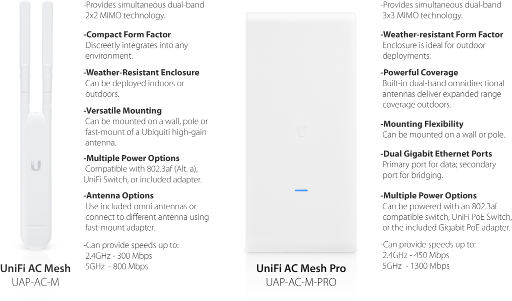
Оба устройства предлагают самые разнообразные варианты применения. UAP-AC-M - младшая модель, при этом она имеет уникальную опцию для подключения к внешним антеннам при помощи адаптера Fast-Mount. К примеру, данное устройство может быть использовано совместно с секторными антеннами airMAX 5G.
Старшая модель UAP-AC-M-PRO идеально подойдет для использования снаружи помещения, где требуется обслужить большое количество клиентов и обеспечить большую пропускную способность, нежели может обеспечить младшая UAP-AC-M.
Главное отличие обеих устройств от других точек доступа UniFi AC в возможности создания соединений типа «multi-hop», по сути это расширенная функциональность технологии Wireless Uplink, которая допускает использование беспроводного устройства в качестве транзитного узла для другой точки доступа.
Wireless Uplink и UniFi Mesh
Технология Wireless Uplink реализована в устройствах UniFi достаточно давно. Wireless Uplink позволяет использовать любую точку доступа, подключенную по кабелю, в качестве базовой станции (Base Station/Uplink AP) для других точек доступа, у которых отсутствует возможность проводного подключения. В общей сложности каждая Uplink AP способна обслуживать до 4-х точек доступа в каждом диапазоне (суммарно до 8-ми).
Ниже приведены таблицы совместимости устройств.
|
UniFi AC (Gen 2) |
Wireless Uplink |
Multi-hop Wireless Uplink |
|
UAP-AC-HD |
+ |
- |
|
UAP-AC-PRO |
+ |
- |
|
UAP-AC-LR |
+ |
- |
|
UAP-AC-LITE |
+ |
- |
|
UAP-AC-IW |
+ |
- |
|
UAP-AC-EDU |
+ |
- |
|
UAP-AC-M |
+ |
+ |
|
UAP-AC-M-PRO |
+ |
+ |
|
UniFi AP (Gen 1) |
Wireless Uplink |
Multi-hop Wireless Uplink |
|
UAP |
+ |
- |
|
UAP-LR |
+ |
- |
|
UAP-PRO |
+ |
- |
|
UAP-AC |
- |
- |
|
UAP-AC-Outdoor |
+ |
- |
|
UAP-Outdoor |
+ |
- |
|
UAP-Outdoor+ |
+ |
- |
|
UAP-Outdoor5 |
+ |
- |
|
UAP-IW |
+ |
- |
Все активные точки доступа без доступа к сети, по-умолчанию (заводские настройки) подключаются к AP в радиусе действия и делают себя доступными для добавления в контроллере UniFi. Таким образом, точка доступа может быть подключена по технологии Wireless Uplink. По завершении конфигурирования такая точка способна ретранслировать SSID и сетевой трафик между своими клиентами и точкой доступа, выполняющей роль Uplink AP.
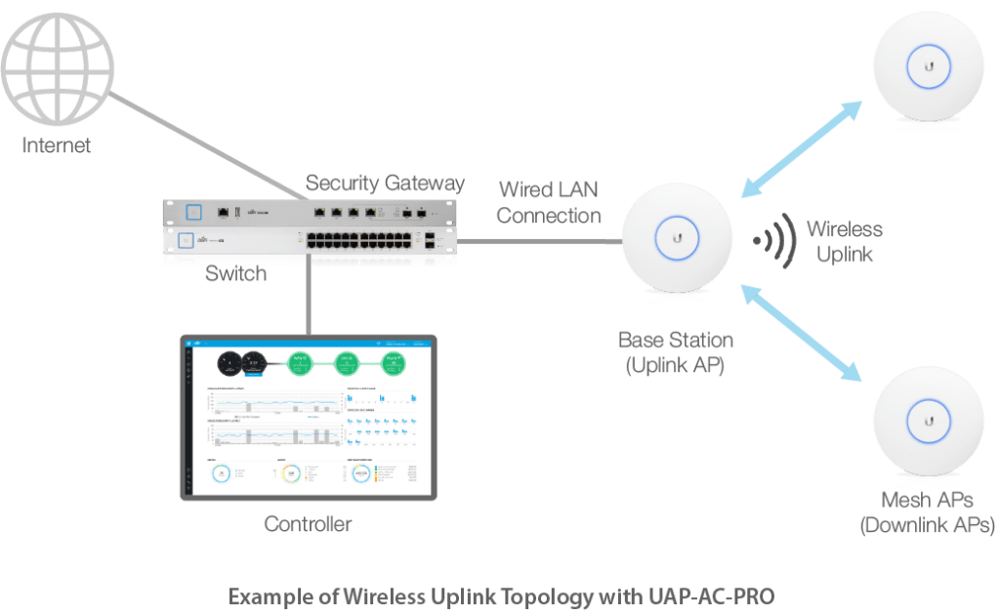
Пример топологии сети при использовании UAP-AC-PRO и технологии Wireless Uplink
Точки UniFi Mesh реализуют Wireless Uplink точно так же, как и обычные точки доступа UniFi AP, при этом, будучи подключенными по «воздуху», они могут выполнять роль Uplink AP, т.е. допускают транзитное подключение удаленных точек.
Чуть ниже на примере вы можете посмотреть, как это выглядит:
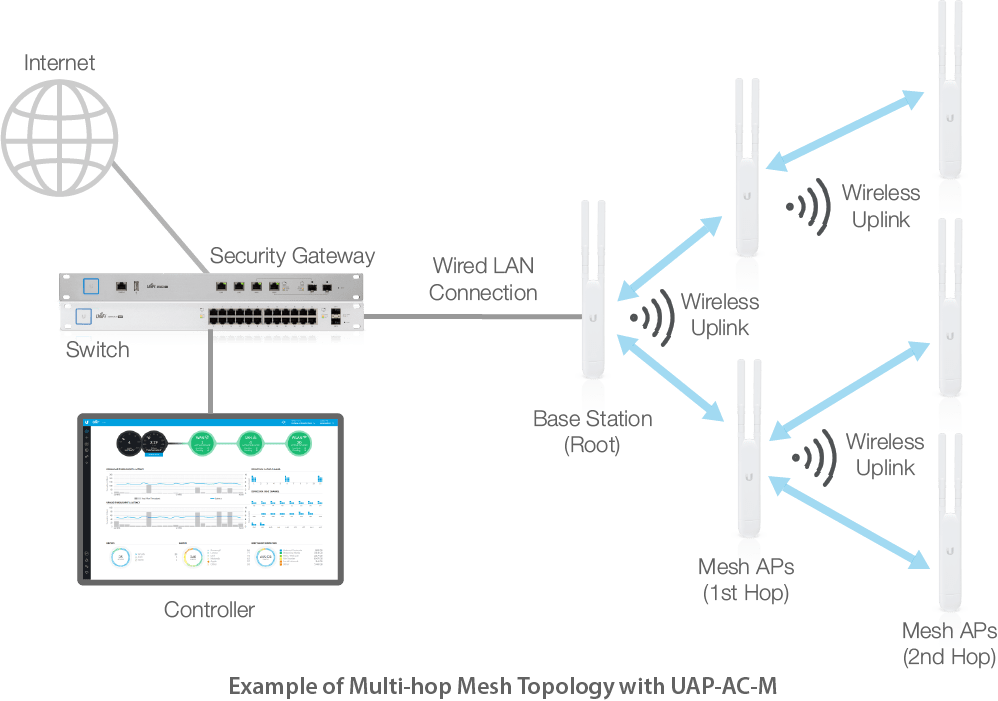
Как видите, «Multi-hop» позволяет использовать несколько последовательных соединений типа Wireless Uplink для того, чтобы подключить наиболее удаленные точки доступа.
Использование Wireless Uplink и создание Mesh
Перед тем, как начать использование технологии Wireless Uplink и создавать Mesh-сеть, требуется активировать соответствующие опции в настройках контроллера.
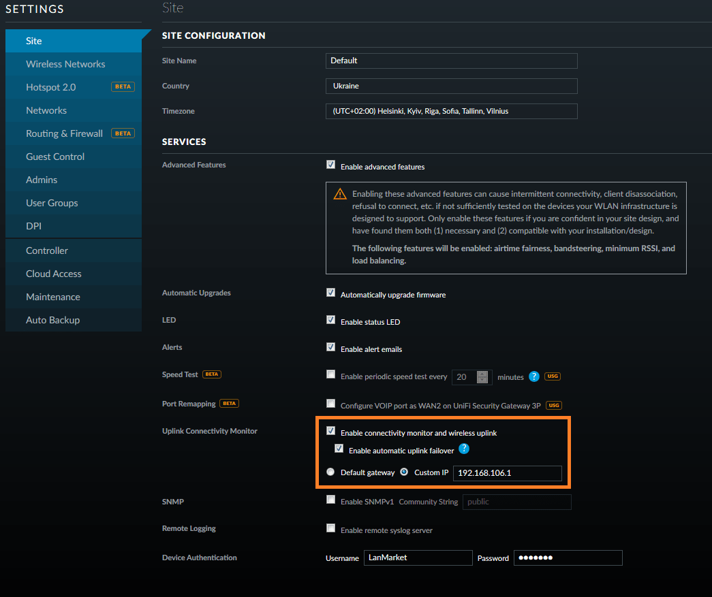
Делается это в меню «Settings - Site», где требуется активировать 2 опции:
Первая опция разрешает использование беспроводных аплинков, вторая опция разрешает системе самостоятельно перестраивать сеть в случае отказа отдельных AP.
При проверке доступности сети, точка доступа ориентируется на IP шлюза в сети. Дополнительно мы изменили IP шлюза, явно указав сетевой адрес нашего главного маршрутизатора - 192.168.106.1. Зачем это делать описано чуть ниже.
К слову, «automatic failover» рекомендуется включать уже после того, как вы добавили все устройства в сеть, т.к. система может динамически менять топологию вашей сети по мере добавления новых устройств.
Интеграцию в уже существующую сеть мы начнем с точки доступа UniFi AP-AC-Mesh-Pro. Для того, чтобы избежать необходимости в использовании адаптеров питания, подключение осуществляем при помощи коммутатора UniFi Switch 8 POE-60W, к одному из портов 5-8.
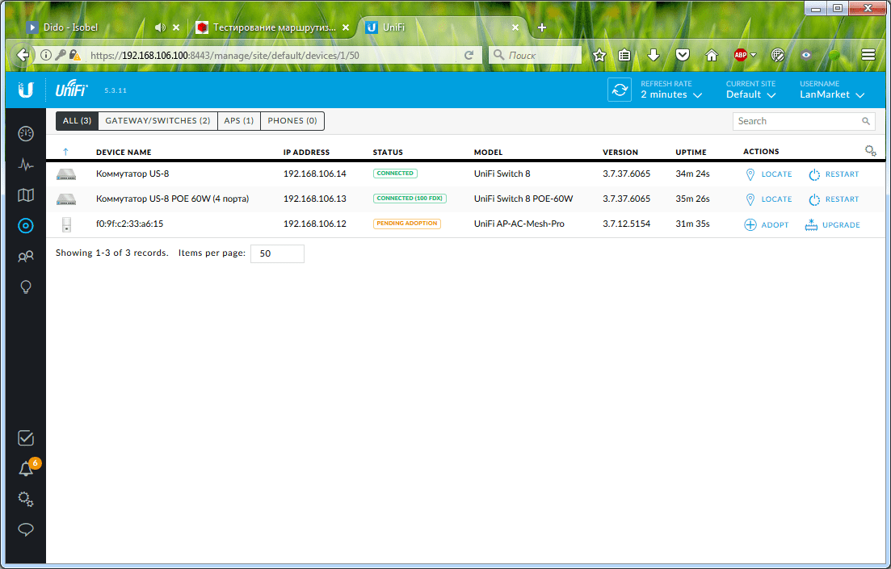
В списке устройств (Devices) появится новое устройство со статусом «Pending Adopting», т.е. ожидающая добавление. Напротив нового устройства требуется нажать кнопку «Adopt», после чего начнется процесс настройки устройства.
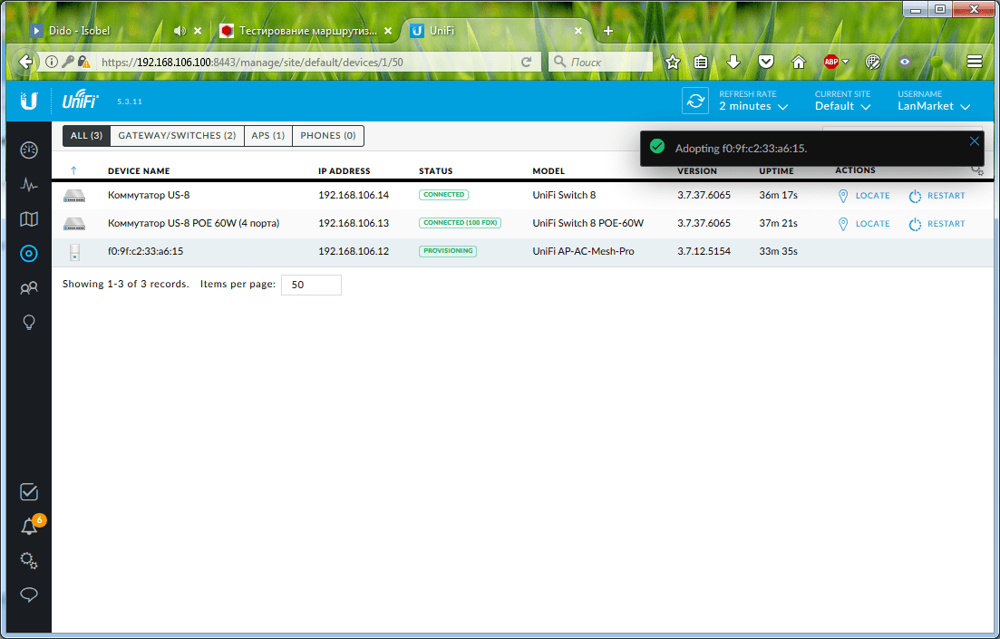
Процесс добавления занимает некоторое время (до 2-5 минут), запаситесь терпением. О завершении процесса можно узнать по индикатору на точке доступа, он должен стать синим.
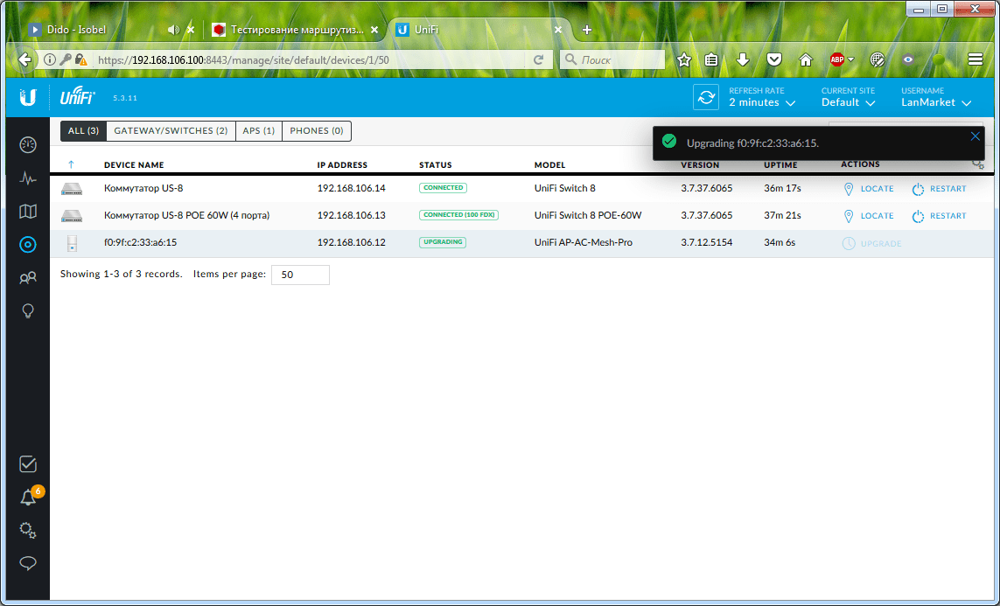
Как видим, новое устройство имеет версию прошивки 3.7.12.5154, эта версия на момент добавления уже устарела и система сразу же предлагает нам произвести автоматическое обновление прошивки до версии 3.7.37.6065. Для этого напротив устройства требуется нажать «Upgrade».
Пока обновляется точка доступа можно приступить к подключению остальных точек доступа. Мы заранее установили 2 точки доступа UniFi AP-AC-Mesh на свои места и подали на них питание.
Поскольку точки доступа UAP-AC-M поддерживают так называемый «wireless adoption», нет необходимости подключать их кабелем в сеть с контроллером. Предварительно мы не выполняли добавление этих устройств в сеть, посмотрим, насколько прост процесс расширения за сёт подключения удаленных устройств по беспроводному каналу.
Перед тем как приступить к добавлению новых устройств по технологии Wireless Uplink, следует ознакомиться со следующими требованиями:
Поскольку ранее мы тестировали исключительно коммутаторы UniFi, процесс настройки беспроводной сети был пропущен.
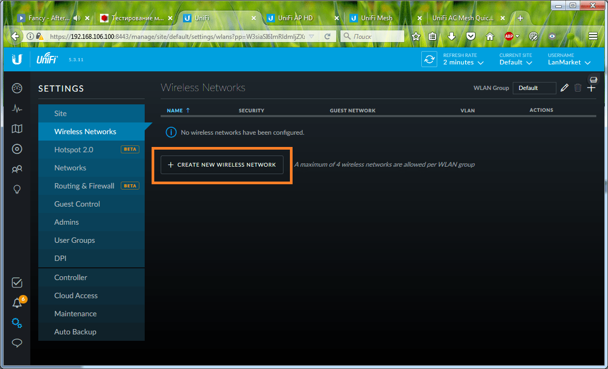
Пока новые точки загружаются, приступаем к созданию новой беспроводной сети, сделать это можно в разделе «Settings», подменю «Wireless Networks», кнопка «Create new wireless network».
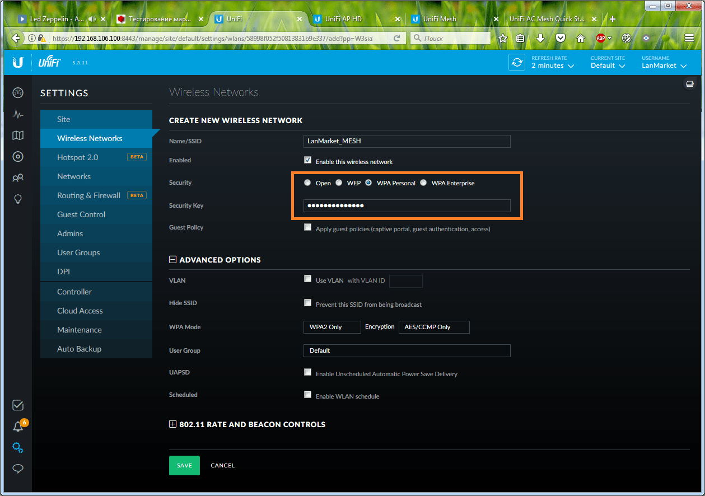
Обязательно активируйте настройку безопасности «WPA Personal», либо «WPA Enterprise» (если присутствует сервер аутентификации).
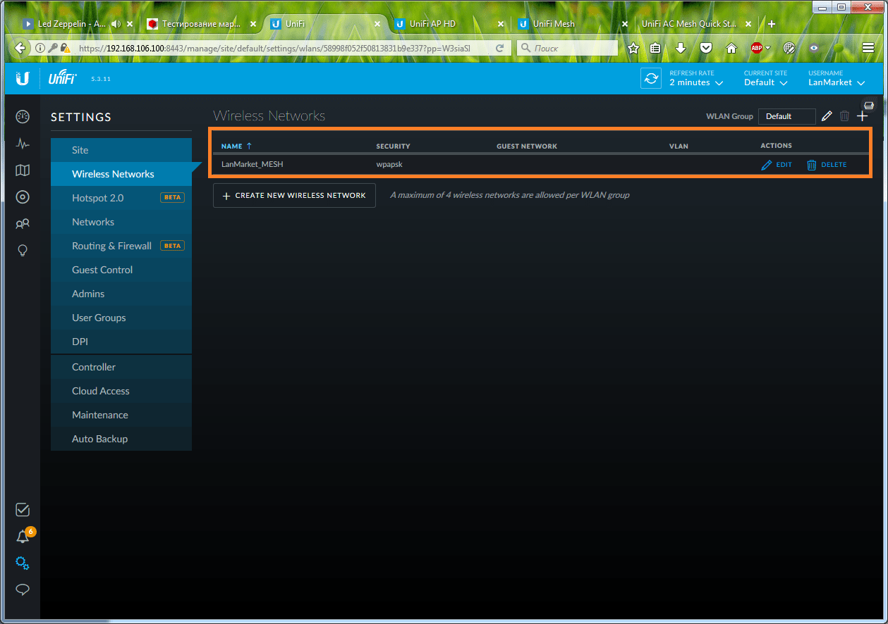
Для начала создадим одну приватную сеть с доступом па паролю, остальные сети можно создать позже.
Поскольку мы не используем шлюз USG, дополнительно требуется внести изменения в настройки локальной сети, иначе беспроводные клиенты не будут иметь доступа к Интернет.
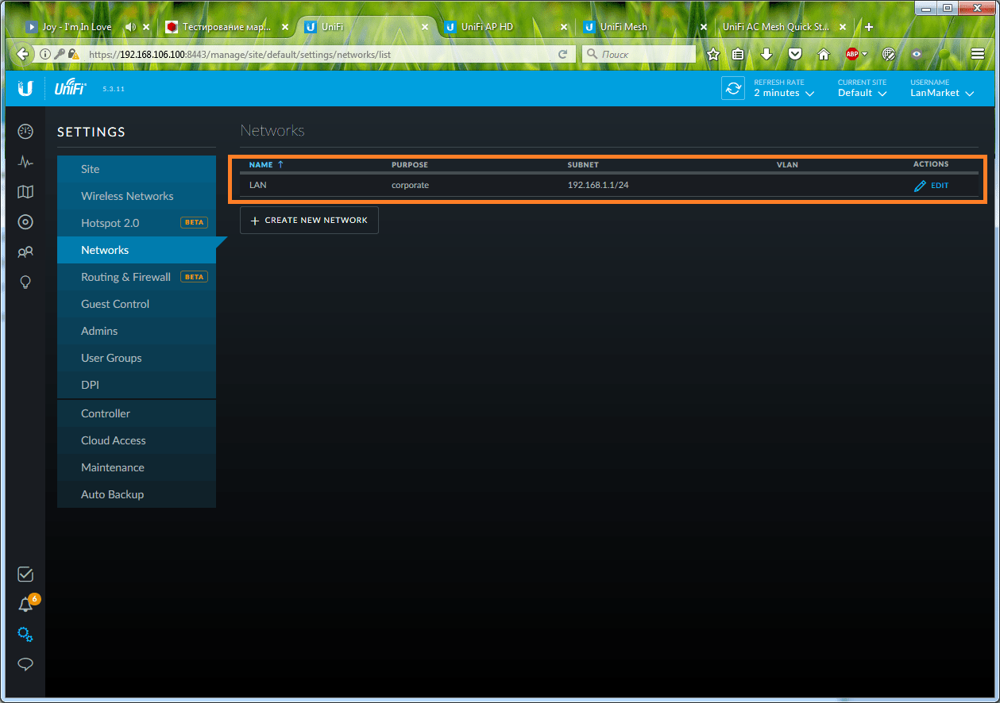
В разделе Network создана стандартная сеть UniFi 192.168.1.1/24, в то время как наш главный шлюз на основе Mikrotik выдает IP в сети 192.168.106.1/24.
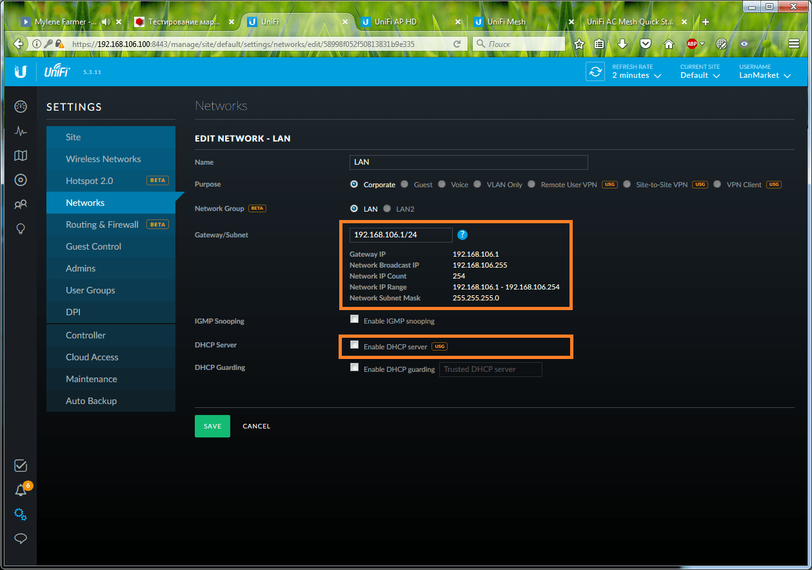
Отключаем опцию «Enable DHCP server», она в любом случае требует наличие шлюза UniFi Security Gateway. После этого меняем Gateway/Subnet на 192.168.106.1/24.
Тем временем, если всё проделано верно, в списке устройств появятся новые точки доступа.
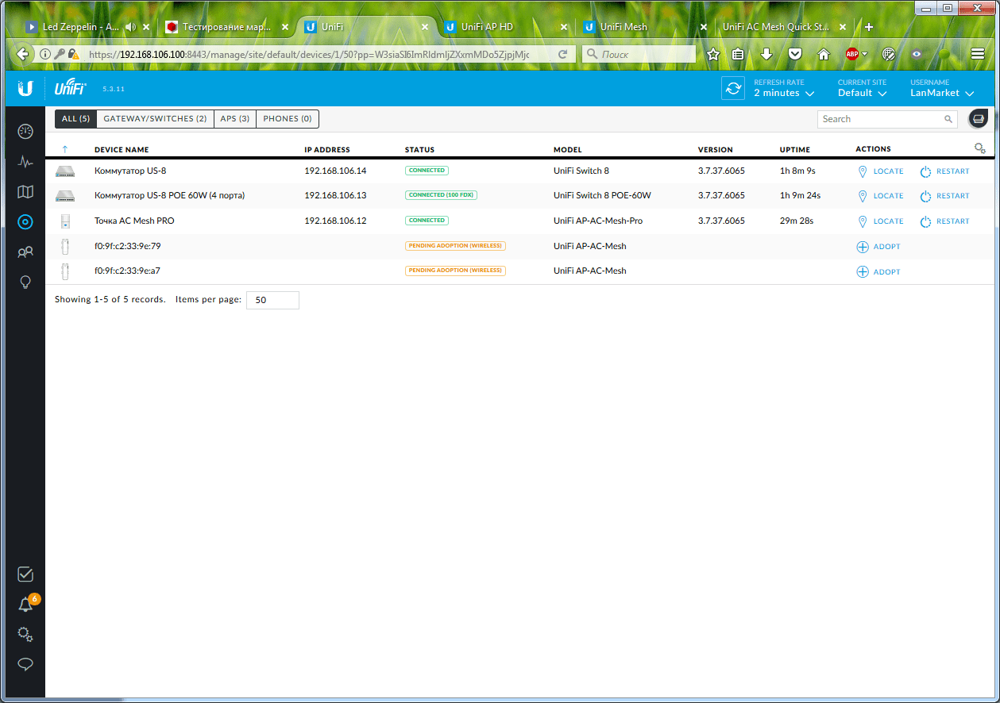
В нашем случае напротив точек доступа отображается «Pending adoption (Wireless)», как видим, система дополнительно информирует нас о том, что устройства будут подключены «по воздуху». Процесс добавления аналогичен первой точке: Adopting > Provisioning > Online (Wireless).
Если всё сделано верно, получится примерно такое:
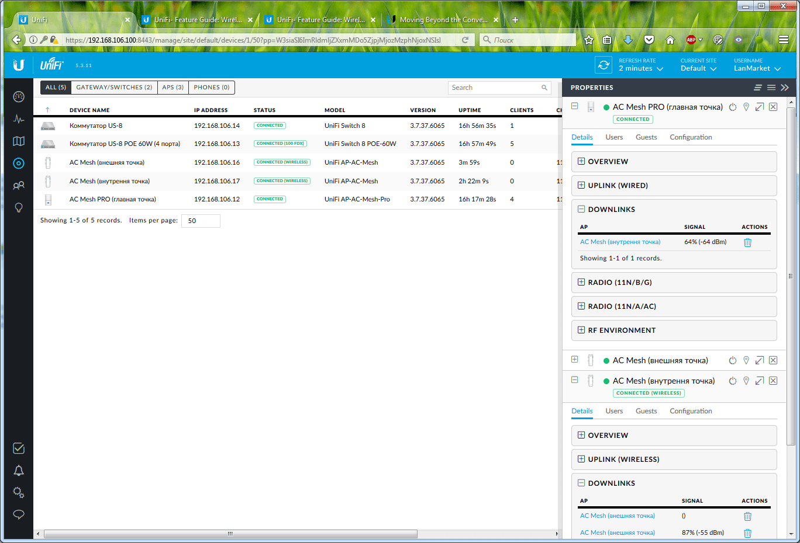
Как видно из примера, к главному устройству AC Mesh PRO по воздуху подключилась внутренняя точка доступа AC Mesh (-64 дБм), в свою очередь к внутренней точке подключена внешняя точка AC Mesh (-55 дБм).
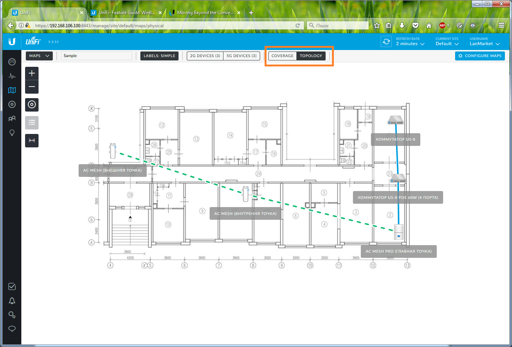
Собственно в разделе «Map» (карта сети) можно загрузит карту местности (план помещения) и перенести на неё все устройства. Контроллер автоматически определит топологию сети и изобразит все соединения между устройства.
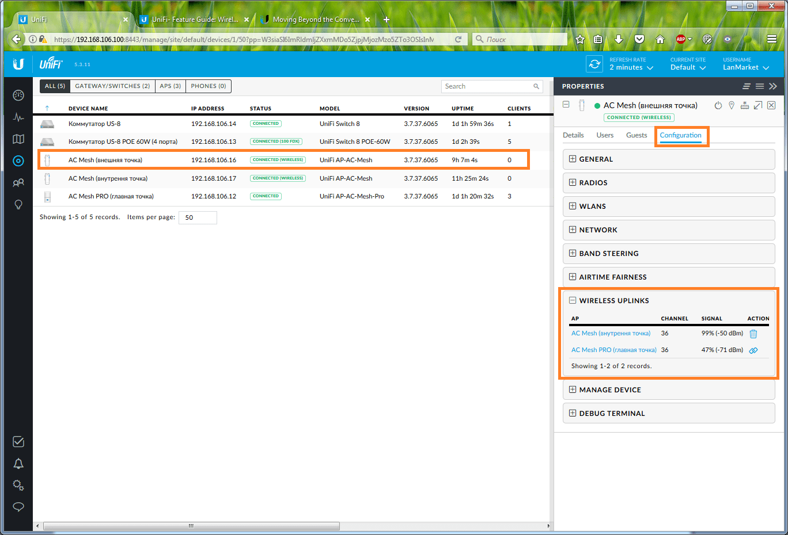
Если вдруг система подключила устройства не так, как вам бы этого хотелось, вы можете всегда вмешаться и привязать устройство. Делается это во вкладке Configuration (конфигураци) - Wireless Uplink. В выпадающем меню отображается список устройств доступных для подключения с указанием уровня сигнала.
Обратите внимание, заранее мы указали алиасы для всех устройств, что сильно упрощает работу анализ сети. К слову, допускается использование названий на русском языке.
Обратите внимание! Если активная опция «Automatic Failover» (автоматическая отказоустойчивость), система может менять связи между точками по своему усмотрению.
UniFi Mesh в помещении: есть ли смысл?
Итак, вы уже ознакомлены со схемой подключения устройств. Между AC Mesh PRO и внутренней точкой доступа AC Mesh находится стена из кирпича в один ряд.
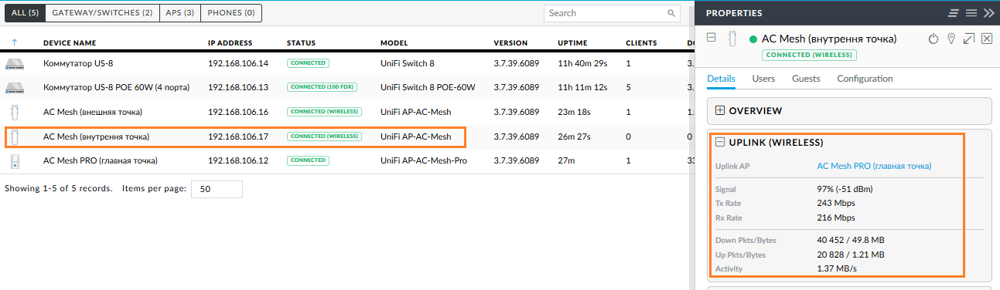
Устройства установили между собой связь на скорости 243/216 Мбит (97%, -51 дБм), периодически устанавливалась скорость 300/300 при уровне сигнала в 99% (-48 дБм).
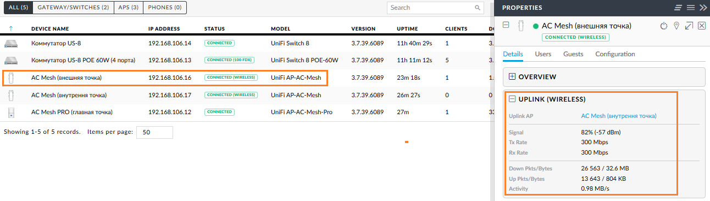
Внешняя AC Mesh подключилась к внутренней AC Mesh на скорости 300 Мбит, сами устройства были на небольшом удалении, но с капитальной стеной между ними.
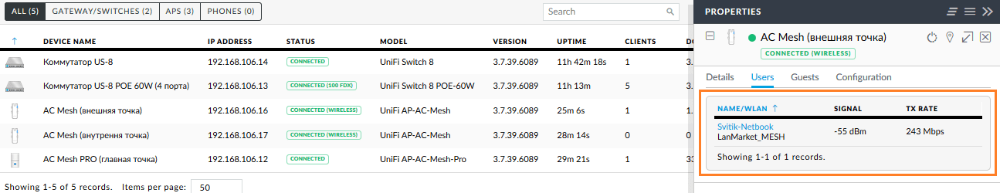
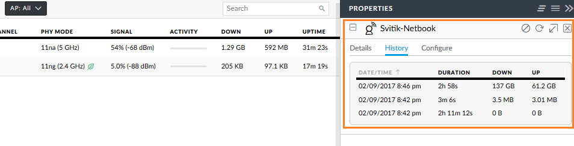
К самой дальней точке доступа по «воздуху» мы подключили производительный нетбук, с целью проверить скорость по Wi-Fi.
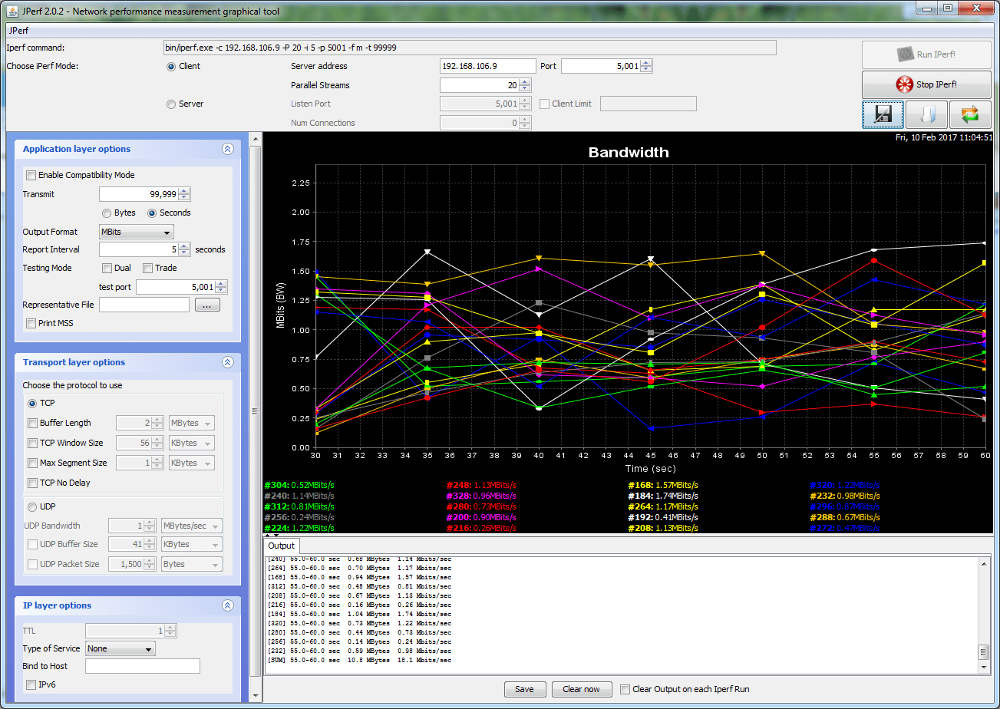
Далее был запущен тест из локальной сети на удаленный нетбук. В среднем, точка предоставляла нам 15-18 Мбит/сек, что для удаленного каскадного подключения касалось бы и много, но всё же.
Чтобы проверить, не ограничивает нам скорость сама АР, мы подключили нетбук напрямую.
Действительно, точка намеренно ограничивает скорость беспроводного клиента. В то же время, при подключении нетбука кабелем к внешней АР, удалось получить честных 60-80 Мбит.
Какова мораль? Каскадный беспроводной мульти-аплинк предоставляет хорошие возможности по развертыванию сети, и в первую очередь речь идет про открытую местность.
UniFi Mesh однозначно не для помещений, т.к. связь между устройствами устанавливается на частоте 5 ГГц, которая сильно восприимчива к любым преградам, из-за чего сильно падает уровень сигнала и возможны периодические перестроения сети с отключением целого сегмента.
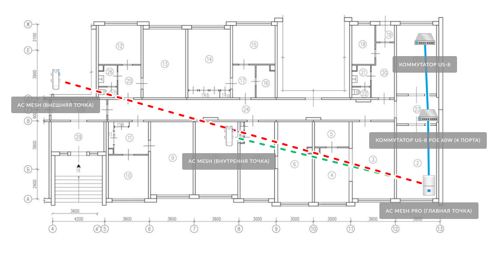
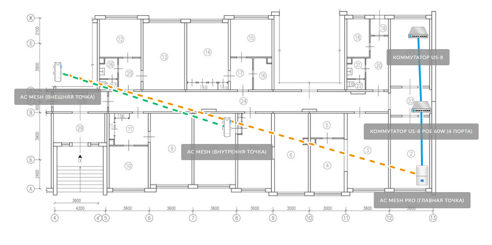
В ряде случаев удаленная AP может быть переключена к точке со слабым уровнем, сигнала даже если поблизости есть более мощная AP. Алгоритмы автоматического Failover сами определяют оптимальный маршрут на своё усмотрение, берите это во внимание. С другой стороны автоматический Plug-n-Play Mesh действительно работает без участия администратора.
Мы, как и инженеры Ubiquiti, настоятельно не рекомендуем использование технологии Multi-Hop Wireless Uplink внутри помещения, поскольку это не позволит вам использовать максимальную скорость на беспроводных точках.
В условиях открытой местности и прямой видимости устройства ведут себя предсказуемо и обеспечивают наиболее оптимальное использование возможностей UniFi Mesh.
Говоря про обычный Wireless Uplink, в ряде случаев, данная технология вполне оправдано может использоваться внутри помещения, предоставляя неплохую скорость без лишних проводов.
u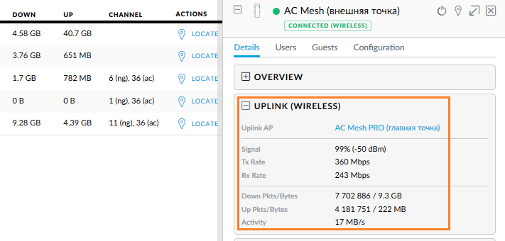
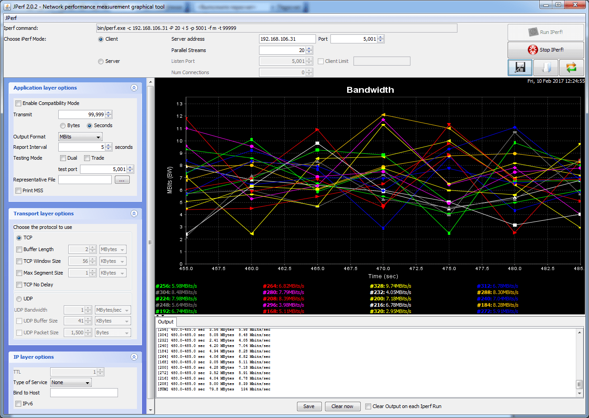
Чуть выше пример использования WU внутри помещения: расстояние 11 метров, между главной точкой и удаленной находится капитальная стена в 50 см. Как результат, на выходе имеем честных 135 Мбит.
В условиях прямой видимости устройства устанавливают канальную скорость 400/300 Мбит, благодаря чему можно получить более высокую скорость.
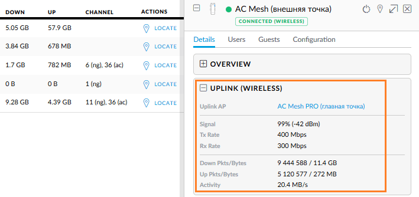
Честных 180+ Мбит для пользовательских данных на выходе.
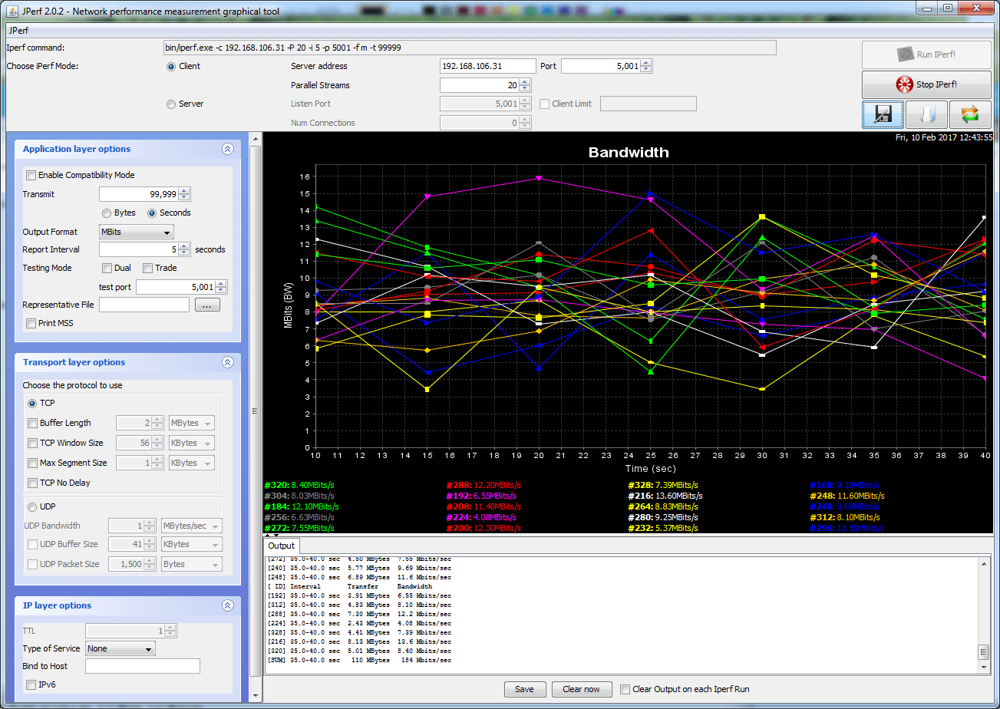
При использовании Wireless Uplink при пиковых загрузках беспроводного линка вы получите возрастание времени задержки, не забывайте об этом.
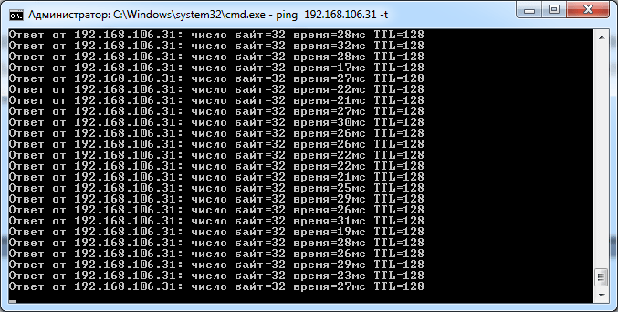
Обратите внимание! Для достижения наилучших результатов, следует обеспечивать не только LOS, но и чистую Зону Френеля.
Сами точки доступа при работе с клиентами обеспечивают стабильную скорость. Многое зависит от Uplink, к примеру, если точка доступа подключена кабелем, то в стандарте 802.11n клиент с MIMO2x2 может без усилий прокачать честных 185 Мбит.
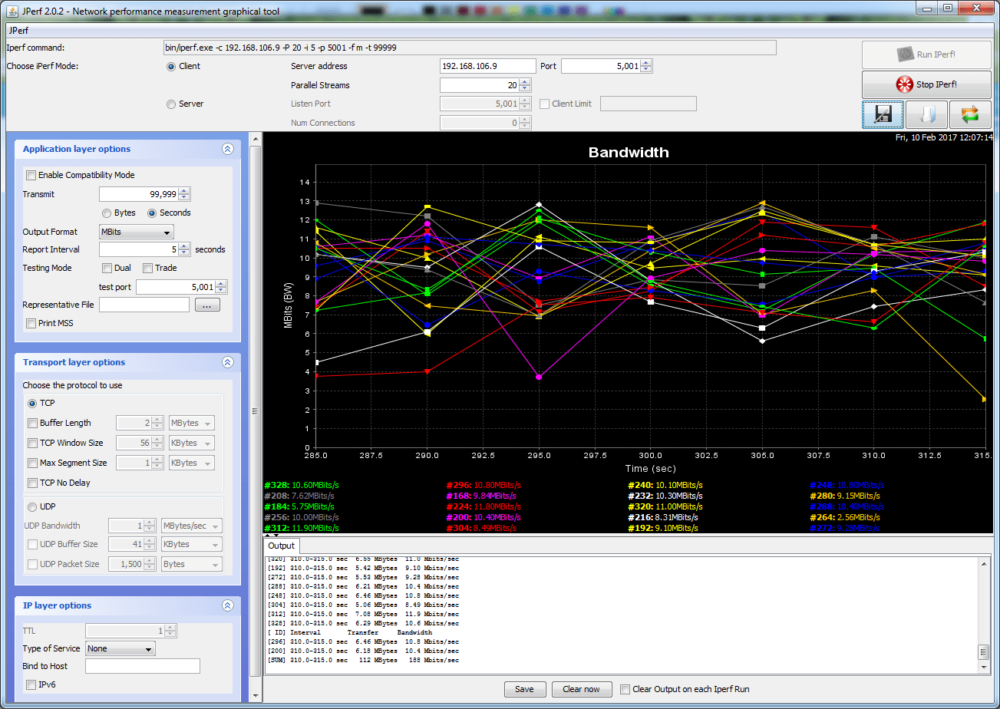
Роуминг беспроводных клиентов и качество покрытия
Ранее мы уже тестировали большое количество беспроводных устройств, начиная с недорогих радиомаршрутизаторов и заканчивая дорогостоящими бизнес-решениями, поэтому часть информации - объективные факт, остальная часть - субъективные ощущения от использования в целом.
В процессе тестировании мы создали две беспроводные сети, первая - закрытая приватная сеть с доступом по паролю (LanMarket_MESH); вторая - открытая сеть без пароля (Free_WiFi).
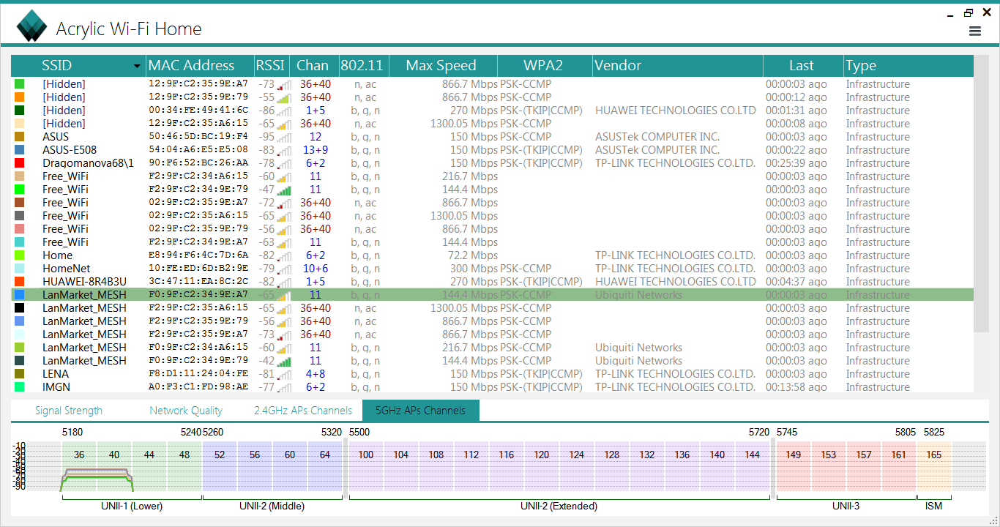
На скрине чуть выше вы можете увидеть скан текущей обстановки в эфире.
В самом верху списка находятся 4 скрытые сети, причем 3 из них принадлежат точкам UniFi, каналы 36+40. Это и есть тот самый Wireless Uplink в диапазоне 5 ГГц. Похоже, точки создают служебные Virtual AP и выделяют под них часть своих ресурсов.
Как видим, имеются 2 скрытые точки по 866.7 Мбит и одна точка на 1300 Мбит - это две AC Mesh (MIMO 2x2) и одна AC Mesh Pro (MIMO 3x3) соответственно.
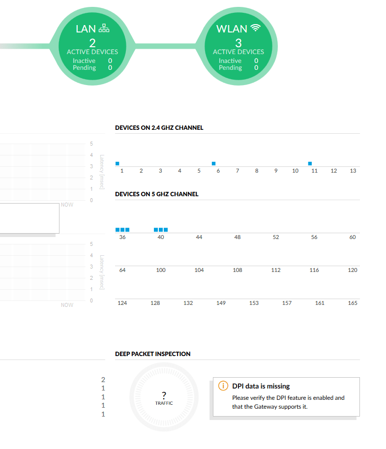
К слову, в диапазоне 5 ГГц на всех точках из-за Wireless Uplink используются одни и те же каналы 36+40, в то время как для 2.4 ГГц каждая точка использует свой канал. Причем контроллер выбрал каналы таким образом, чтобы они не пересекались - 1, 6 и 11.
Также вы можете увидеть, насколько сигнал в диапазоне 2.4 ГГц имеет большую дальность, в сравнении с 5 ГГц, особенно если есть преграды.
Наглядный пример - уровень сигнала на смартфоне за капитальной стеной:
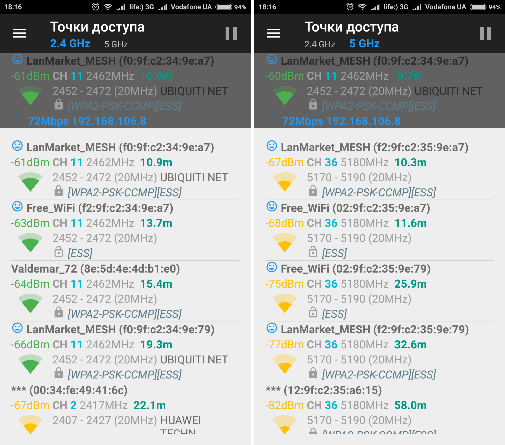
2.4 ГГц без проблем «прошивает» капитальную стену, в то время для 5 ГГц такое препятствие создает проблемы.
Ради интереса, сравнили работу UniFi на 2.4 ГГц в сравнении с Mikrotik RB951Ui-2HnD, переделанного под внешние антенны на 5 дБи.
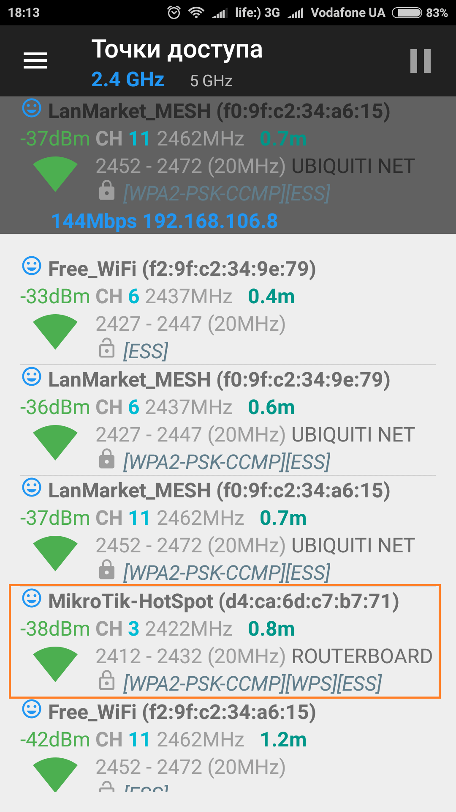
Предварительно мощность сигнала на Mikrotik была приведена до уровня UniFi.
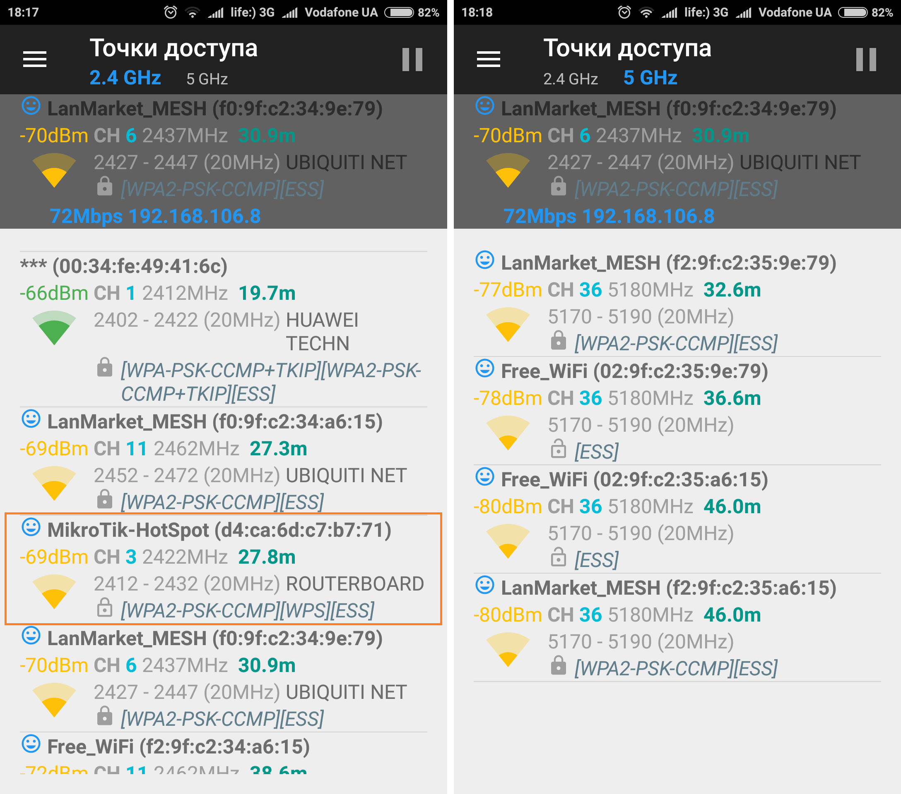
Затем мы отдалились от устройства на 5 метров и спустились на 1 этаж ниже по отношению к точкам доступа: -70 дБм и канальная скорость в 72 Мбит достаточно хороший результат, особенное если учесть количество несущих конструкции и железобетона между смартфоном и АР. Обратите внимание на разницу в уровне сигнала 2.4 и 5 ГГц.
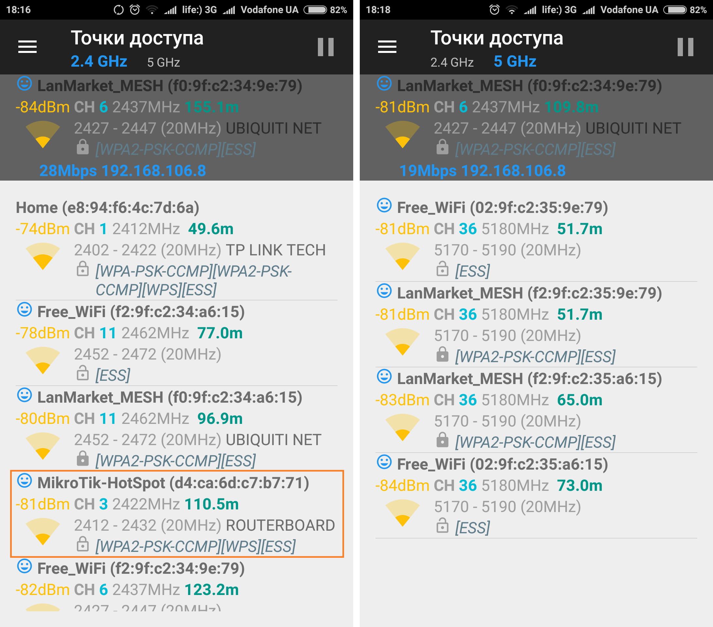
Двумя этажами ниже, сеть всё еще работает, канальная скорость 19-28 Мбит это немного, хотя для серфинга достаточно.
Обратите внимание, на UniFi установлен режим «Auto», при котором мощность выставляется на 20 дБм EIRP. При желании (необходимости) мощность можно увеличить.
Пара слов касаемо роуминга. Клиенты автоматически переключаются между точками в процессе перемещения, о чем даже и не подозревают.
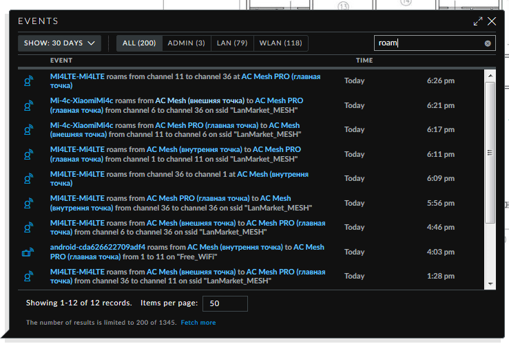
С мобильными устройствами роуминг работает прекрасно. Касаемо ноутбуков, могут быть случаи, когда устройство держится за конкретную точку, при том, что доступна точка с более высоким уровнем сигнала. По крайней мере, на Windows 7 именно так.
Дискомфорта это не вызывает, т.к. устройство держится за точку не до последнего, а только до определенного уровня сигнала.
При желании, пользователю доступа функция «Minimum RSSI», о чем читайте чуть ниже.
Продвинутые возможности контроллера UniFi
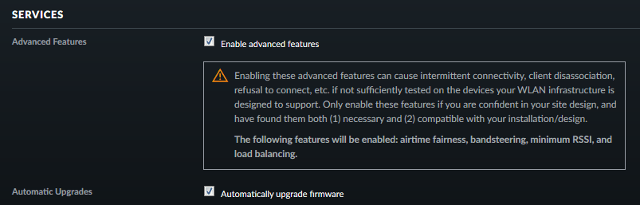
В разделе настроек опытные администраторы могут активировать опцию «Enable advanced features», т.е. включение дополнительных опций.
Активация этого пункта рекомендуется только в том случае, если вы не нашли альтернативных путей для решения поставленной задачи, поскольку неправильная настройка или конфигурация может повлечь отказ сети и отключение клиентов.
Данный пункт активирует 4 опции:
Airtime Fairness во многом напоминает TDMA, если кратко, система разделяет эфир поровну между клиентами, что призвано исключить проблемы с очень быстрыми и очень медленными клиентами.
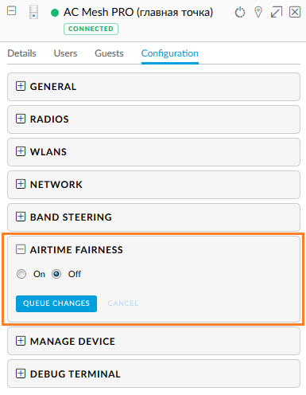
По-умолчанию, функция отключена, поэтому на необходимых точках её требуется активировать вручную.
Band steering также отключен по-умолчанию и настраивается отдельно для каждой точки.
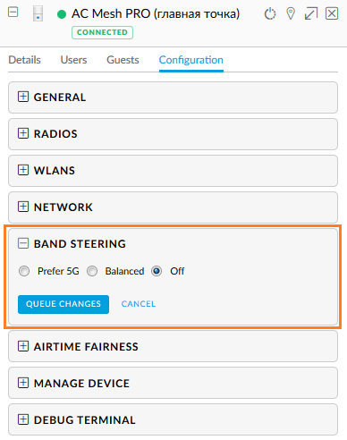
В режиме «Prefer 5G» точка доступа попытается «выталкивать» клиентов в диапазон 5 ГГц. В режиме «Balanced», AP будет пытаться равномерно распределить своих клиентов между двумя диапазонами.
Minimum RSSI настраивается индивидуально для каждой точки, причем для каждого диапазона настройки могут отличаться.
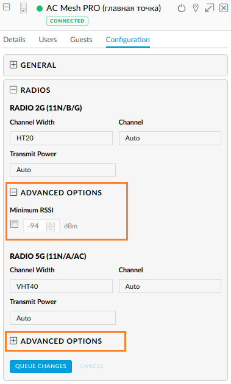
Minimum RSSI это своего рода аналог ACL в Mikrotik, опция позволяет задать граничный уровень сигнала, при котором точка доступа не станет подключать клиента.
Настройка будет полезна продвинутым администраторам, которые хотят улучшить работу роуминга и/или отсечь клиентов, находящихся вне заданной зоны.
Load Balancing - функция равномерного распределения клиентов между точками доступа. Настройка выполняется отдельно для каждой группы (!) WLAN. При желании, вы можете задать ограничение в Х клиентов на точку, при достижении лимита, AP будет отключать клиентов с самым низким уровнем сигнала.
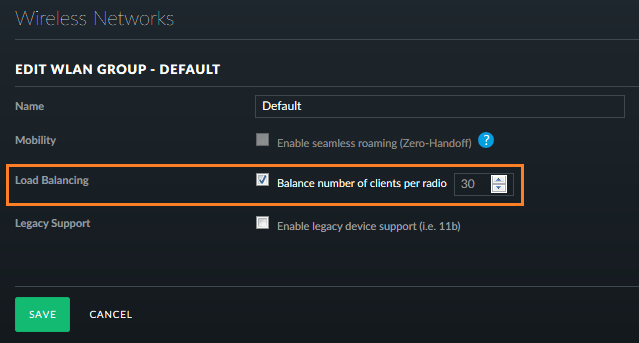
Обратите внимание, в одной группе WLAN может находится несколько беспроводных сетей.
Есть в настройках беспроводной сети еще одна интересная опция - Zero-Handoff. Для того, чтобы её активировать, заранее требуется создать новую (!) группу WLAN и перенести в неё нужные беспроводные сети.
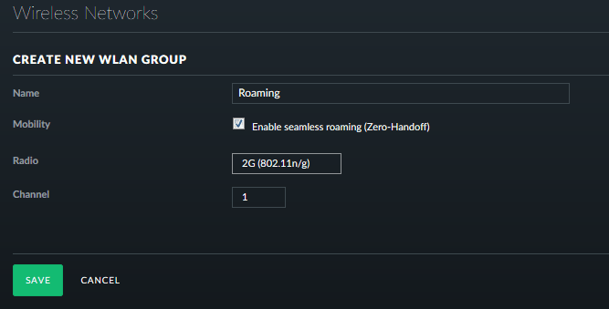
Zero-Handoff - собственная разработка Ubiquiti для реализации бесшовного роуминга. Обратите внимание, данная функция работает исключительно с защищенными беспроводными сетями.
RF Environment - специальный инструмент для изучения радиообстановки на конкретной точке. С помощью данного инструмента опытный администратор сможет грамотно распределить каналы.
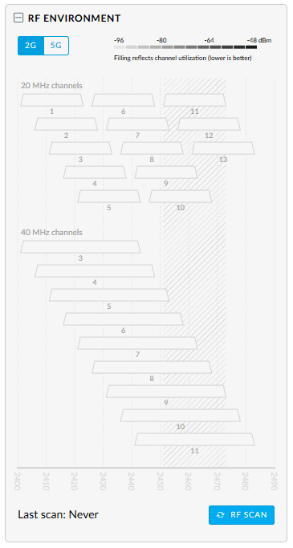
Запускается функция на конкретной беспроводной точке. Обратите внимание, процесс сканирования может занять более 5-ти минут, при этом AP не будет обслуживать клиентов.
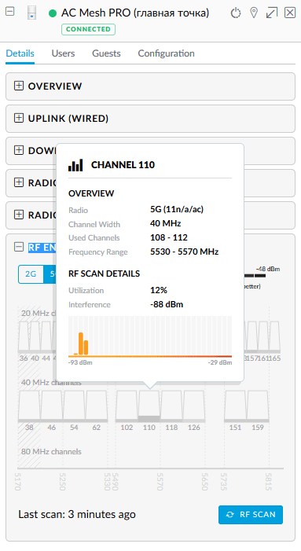
По завершении сканирования система предоставит удобный отчет по каждому диапазону. Обратите внимание, анализ проводится для разной ширины канала - 20, 40 и 80 МГц.
Возможные ошибки при работе с Wireless-Uplink и UniFi Mesh
Бывают случаи, когда пользователи добавляют новые устройства без правки настроек контроллера, а именно, не активировав опцию «Enable automatic uplink failover». В таком случае, при изменении конфигурации сети, удаленные точки уходят в режим изоляции и отключаются. Выглядит это следующим образом:
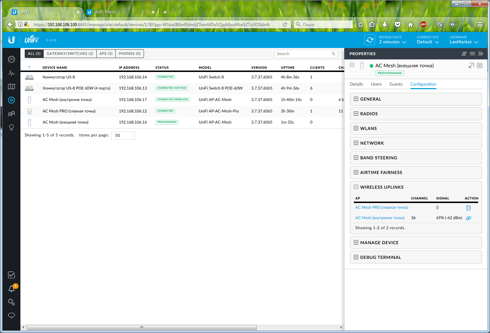
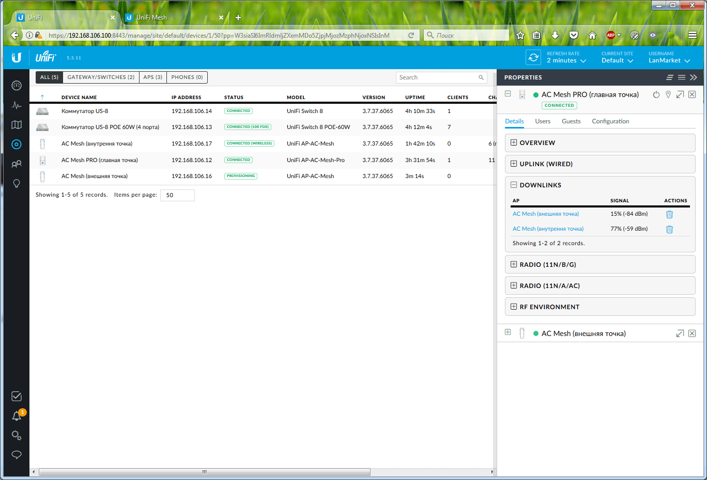
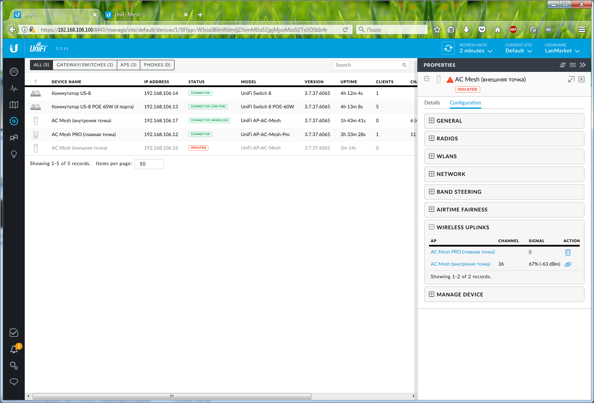
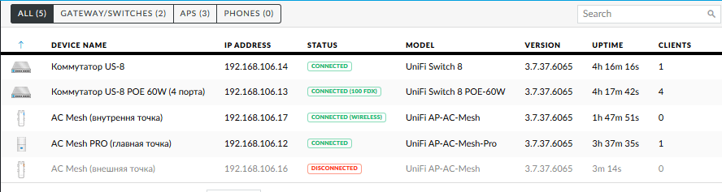
Как видим, при таком сценарии точка попытается скорректировать настройки и подключается к ближайшей точке контроллера. Буквально через несколько минут она опять уйдет в режим изоляции, после чего последует Disconnect.
Допустили ошибку? Ничего страшного, внесите изменения в настройки контроллера, а саму точку подключите по кабелю, после того как она получит новые настройки, можно использовать автоматический Plug-n-Play Mesh.
В крайнем случае, для сбойной точки выполняете отвязку (Configuration - Manage Device - Forget), после чего на самой точке можно сделать сброс (удерживайте Reset более 5 секунд пока не погаснут индикаторы) и выполнить повторное конфигурирование.
Практические рекомендации по эксплуатации UniFi Mesh
Несмотря на богатые возможности новых устройств, на практике необходимо учитывать ряд факторов и ограничений, влияющих на развертывание ячеистой сети и использование технологии Wireless Uplink.
Технология Wireless Uplink использует единый канал и для связи между устройствами, и для вещания. Учитывая этот факт, настоятельно НЕ рекомендуется построение Mesh-сети там, где имеется возможность проводного подключения к сети UniFi.
Wireless Uplink лучше всего использовать там, где нет технической возможности тянуть кабель.
Связь между точками доступа осуществляется в диапазоне 5 ГГц, который хоть и высокоскоростной но, в то же время, сильно подвержен влиянию препятствий в виде стен, построек и т.д. Наиболее высоких показателей производительности можно достичь на открытой местности - парки, площади и стадионы.
Чаще всего, устройства связываются на частоте 5 ГГц и диапазон 2.4 ГГц не затрагивается, благодаря чему его ресурсы в полной мере доступны обычным клиентам.
При построении связей, с целью оптимизации задержек и пропускной способности, при использовании UniFi Mesh совместно с Wireless Uplink, рекомендуется выполнить балансировку подключений во избежание перегрузки отдельных узлов, что может повлечь за собой нестабильную работу и падение пропускной способности целого сегмента.
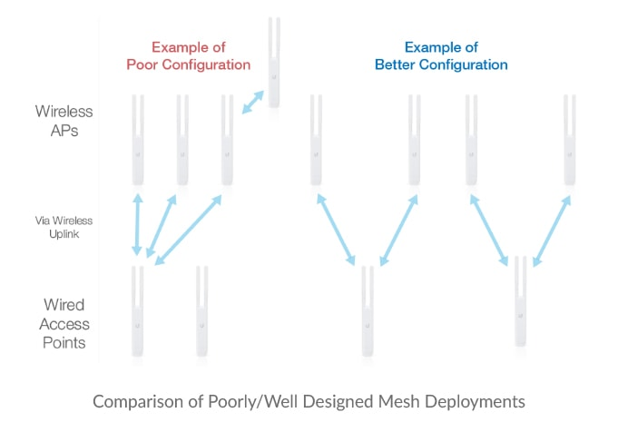
Слева на схеме изображена неправильная топология, приводящая к перегрузке одного из узлов. Одна из точек обслуживает чрезмерное количество устройств, в то время как соседние точки могли бы взять на себя обслуживание части устройств, сбалансировав каналы.
Справа - пример правильного распределения подключений, где точки равномерно распределены между Uplink AP.
Важно также понимать, что при подключении каждой точки доступа по технологии Wireless Uplink, каждый раз падает пропускная способность корневой точки, поэтому использование данного функционала это всегда выбор между доступностью сети в конкретном месте и пропускной способностью.
Если же вы не используете беспроводные аплинки, данную функцию рекомендуется вообще запретить в настройках, отключив соответствующую опцию «Connectivity Uplink Monitor & Wireless Uplink» (см. выше).
Статус оборудования в UniFi Controller
Для того, чтобы сделать вашу работу с контроллером более удобной мы подготовили для вас небольшую «шпаргалку» по статусам, которая поможет понять, что происходит с устройством в данный момент.
Connected (подключено) - устройство подключено к системе и находится в рабочем режиме. Устройство способно обслуживать клиентов, в том числе беспроводных, при этом на устройстве не запланировано никаких обновлений или изменений конфигурации.
Provisioning (идет настройка) - устройство подключено к системе, при этом на нем выполняется принятие новых настроек либо обновление программного обеспечения. Выполняется быстрая перезагрузка при которой будут отключены все клиенты и устройства. По завершении принятия изменений устройство перейдет в статус Online.
Heartbeat Missed (потеря связи) - UniFi Controller не получил ответа от устройства на протяжении заданного интервала. Как правило, если в течение 30-45 секунд устройство не выйдет на связь, система переведет его статус в «Disconnected».
Disconnected (недоступно) - устройство, прошедшее процедуру добавления (adopt) не доступно для управления контролером. Следует выполнить проверку кабелей, настроек и сетевой топологии.
Isolated (режим изоляции) - UniFi AP не может получить ответ от шлюза, при этом, рядом есть управляемая беспроводная точка доступа к которой можно выполнить подключение при помощи Wireless Uplink. Ожидается подключение по беспроводному аплинку.
Managed by Other (привязка к другому контроллеру) - устройство находится в той же сети, что и контроллер (Layer 2), при этом устройство ранее уже было привязано к другому контроллеру. Необходимо указать логин и пароль от устройства, после чего устройство можно будет привязать к текущему контроллеру.
Upgrading (выполняется обновление) - на устройстве выполняется обновление программного обеспечения. Не отключайте питание до завершения процесса.
Pending Adoption (ожидается добавление) - устройство обнаружено контроллером UniFi. Необходимо выполнить добавление устройства в контроллер, для чего следует нажать кнопку «Adopt».
Connected (Wireless) - то же самое что и «Connected», при этом точка доступа подключена по технологии Wireless Uplink.
Connected (Disabled) - устройство отключено в настройках контролера (Properties > Manage Device >Disable this Device). Также устройство исключено из статистики на главной странице (dashboard status), отключена LED-индикация и беспроводные сети (WLAN).
Connected (100 FDX) - устройство подключено, но не на максимально возможной скорости. К примеру, устройство поддерживает 1 Гбит, но подключено на скорости 100 Мбит, или же вместо дуплекса используется режим поочередной передачи (HDX / Half Duplex).
Connected (Limited) - ограниченное подключение. Устройство подключено и имеет доступ к контроллеру, при этом нет связи с главным шлюзом или же требуется ввести ручные настройки IP. Если в этом режиме находится Uplink AP, все подключенные к ней точки доступа (downlink) перейдут в режим изоляции (Isolated).